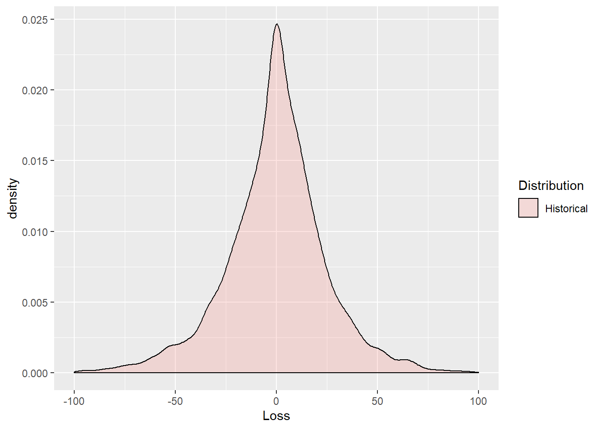

Chapter 5 Market Risk
5.1 Imagine This
Suppose a division in our company buys electricity to make steel. We know of two very volatile factors in this process:
- The price of steel at the revenue end, and the other is
- The price of electricity at the cost end.
To model the joint volatility of the power-steel spread We can use electricity and steel prices straight from the commodity markets. We can also use stock market indexes or company stock prices from electricity producers and transmitters and from a steel products company to proxy for commodities. Using company proxies gives us a broader view of these commodities than just the traded pure play in them.
In this chapter we will
- Measure risks using historical and parametric approaches
- Interpret results relative to business decisions
- Visualize market risk
5.2 What is Market Risk?
Market risk for financial markets is the impact of unanticipated price changes on the value of an organization’s position in instruments, commodities, and other contracts. In commodity markets there is sometimes considered a more physical type of market risk called volumetric risk that relates to the delivery of the commodity to a buyer. This risk might be triggered by a complex contract such as a CDO or a spark spread tolling agreement in power and energy markets. Here we will assume that volumetric changes are physical in the sense that a electricity system operator governs a physical process such as idling an electric generation plant.
A “position” is the physical holding of an asset or commodity, such as a share of Apple stock, or an ounce of gold. A long position means that the market participant possesses a positive amount of the asset or commodity. A short position means that the market participant does not possess an asset or commodity. The “position” is considered exogenous to the price stochastic process. This implies that changes in position do not affect the liquidity of the market relative to that position.
5.2.1 Try this exercise
Suppose you are in charge of the project to manage the contracting for electricity and steel at your speciality steel company. Your company and industry have traditionally used tolling agreements to manage the steel-power spread, both from a power input and a steel output point of view.
- Look up a tolling agreement and summarize its main components.
- What are the input and output decisions in this kind of agreement.
Here are some results
- In the electric power to steel tolling agreement a steel buyer supplies power to a steel plant and receives from the plant supplier an amount of steel based on an assumed power-to-steel transformation rate at an agreed cost.
- Prices of power and steel
- Transformation rate
- Agree cost
- Decisions include
- Buying an amount of power (MWh)
- Selling an amount of steel (tons)
- Scheduling plant operations
Decisions will thus depend on the prices of electricity and steel, the customer and vendor segments served, the technology that determines the steel (tons) / Power (MWh) transformation rate, start-up, idle, and shut-down timing and costs and overall plant production costs.
5.3 History Speaks
To get the basic idea of risk measures across we develop the value at risk and expected shortfall metrics from the historical simulated distributions of risk factors. Given these risk factors we combine them into a portfolio and calculate their losses. Finally with the loss distribution in hand we can compute the risk measures.
We will use a purely, non-parametric historical simulation approach in this section. This means that we will not need to compute means, standard deviations, correlations, or other statistical estimators, also known as parameters.
First we need to get some data. We will use throughout these computations several libraries:
mvtnormbuilds multivariate normal (Gaussian) simulations andQRMestimates Student-t and generalized pareto distribution (GPD) simulation.- We will hold off on these parametric approaches till later and start with historical simulation.
- The
psychlibrary helps us to explore the interactions among data through scatter plots and histograms. - The
ggplot2library allows us to build complex vizualizations that will aid the generation of further insights.
We read in the csv file from the working directory. This file contains dates and several risk factors. In this setup we will use RWE stock prices will stand in for electricity price risk factor input and THYSSEN stock prices for the steel price risk factor.
#Download the data
data.all <- read.csv("data/eurostock.csv",stringsAsFactors = FALSE)
## This will convert string dates to date objects below
str(data.all) ## Check the structure and look for dates## 'data.frame': 6147 obs. of 24 variables:
## $ X : chr "1973-01-01" "1973-01-02" "1973-01-03" "1973-01-04" ...
## $ ALLIANZ.HLDG. : num 156 156 161 162 164 ...
## $ COMMERZBANK : num 147 147 149 152 152 ...
## $ DRESDNER.BANK : num 18.4 18.4 18.8 18.9 18.9 ...
## $ BMW : num 104 109 110 111 109 ...
## $ SCHERING : num 36.9 37.4 37.8 37.9 37.4 ...
## $ BASF : num 15 15.4 15.6 15.8 15.8 ...
## $ BAYER : num 12.2 11.9 12.1 12.7 12.7 ...
## $ BAYERISCHE.VBK.: num 23.5 22.9 23.4 23.7 23.9 ...
## $ BAYER.HYPBK. : num 23.4 23.2 23.3 23.5 23.4 ...
## $ DEGUSSA : num 203 207 208 210 214 ...
## $ DEUTSCHE.BANK : num 22.3 22.5 22.9 23 23.3 ...
## $ CONTINENTAL : num 8.54 8.83 8.78 8.83 8.73 8.82 8.74 8.73 8.74 8.74 ...
## $ VOLKSWAGEN : num 134 140 145 144 140 ...
## $ DAIMLER.BENZ : num 17 17.6 17.8 17.8 17.7 ...
## $ HOECHST : num 13.8 13.8 14.2 14.3 14.2 ...
## $ SIEMENS : num 20.8 21.1 21.3 21.4 21.5 ...
## $ KARSTADT : num 360 360 362 369 368 ...
## $ LINDE : num 136 137 140 142 144 ...
## $ THYSSEN : num 67.5 68.4 67.5 71.6 71.2 ...
## $ MANNESMANN : num 85 86.5 87.8 88.7 88.6 ...
## $ MAN : num 118 119 125 125 127 ...
## $ RWE : num 11.7 11.9 12 11.9 12 ...
## $ INDEX : num 536 545 552 556 557 ...The next thing we must do is transform the data set into a time series object. The way we do that is to make the dates into row names so that dates are the index for the two risk factors. Making dates an index allows us to easily filter the data.
## chr [1:6147] "1973-01-01" "1973-01-02" "1973-01-03" "1973-01-04" ...date <- as.Date(row.names) ## convert string dates to date objects
str(date) ##Always look at structure to be sure## Date[1:6147], format: "1973-01-01" "1973-01-02" "1973-01-03" "1973-01-04" "1973-01-05" ...## X ALLIANZ.HLDG. COMMERZBANK DRESDNER.BANK BMW
## 1973-01-01 1973-01-01 155.5 147.4 18.40 104.0
## 1973-01-02 1973-01-02 155.5 147.4 18.40 109.0
## 1973-01-03 1973-01-03 160.6 149.1 18.80 109.8
## 1973-01-04 1973-01-04 162.3 152.1 18.91 110.8
## 1973-01-05 1973-01-05 164.3 152.1 18.89 109.4
## 1973-01-08 1973-01-08 164.3 152.2 18.99 109.0
## SCHERING BASF BAYER BAYERISCHE.VBK. BAYER.HYPBK. DEGUSSA
## 1973-01-01 36.88 14.96 12.24 23.47 23.40 203.5
## 1973-01-02 37.44 15.43 11.95 22.92 23.22 206.8
## 1973-01-03 37.79 15.61 12.10 23.45 23.34 208.2
## 1973-01-04 37.86 15.85 12.71 23.66 23.49 210.1
## 1973-01-05 37.44 15.75 12.74 23.87 23.40 214.3
## 1973-01-08 37.79 15.80 12.74 24.07 23.46 216.7
## DEUTSCHE.BANK CONTINENTAL VOLKSWAGEN DAIMLER.BENZ HOECHST
## 1973-01-01 22.29 8.54 134.1 16.97 13.77
## 1973-01-02 22.50 8.83 140.0 17.59 13.77
## 1973-01-03 22.86 8.78 144.5 17.79 14.22
## 1973-01-04 23.04 8.83 144.0 17.81 14.32
## 1973-01-05 23.29 8.73 139.9 17.73 14.23
## 1973-01-08 23.18 8.82 143.8 17.70 14.19
## SIEMENS KARSTADT LINDE THYSSEN MANNESMANN MAN RWE INDEX
## 1973-01-01 20.76 359.6 135.9 67.47 84.97 117.9 11.68 536.4
## 1973-01-02 21.06 360.0 136.9 68.41 86.51 118.8 11.87 545.4
## 1973-01-03 21.29 362.0 139.6 67.47 87.75 125.0 12.03 552.5
## 1973-01-04 21.44 369.3 142.2 71.62 88.71 125.0 11.95 556.1
## 1973-01-05 21.48 368.5 143.7 71.24 88.63 127.3 12.03 557.4
## 1973-01-08 21.48 366.9 143.8 70.77 89.01 125.3 11.91 555.5## X ALLIANZ.HLDG. COMMERZBANK DRESDNER.BANK BMW
## 1996-07-16 1996-07-16 2550 323.0 38.15 843.5
## 1996-07-17 1996-07-17 2572 331.0 38.35 845.2
## 1996-07-18 1996-07-18 2619 335.0 39.60 844.0
## 1996-07-19 1996-07-19 2678 336.8 39.50 847.5
## 1996-07-22 1996-07-22 2632 336.8 39.00 844.0
## 1996-07-23 1996-07-23 2622 337.5 39.20 844.0
## SCHERING BASF BAYER BAYERISCHE.VBK. BAYER.HYPBK. DEGUSSA
## 1996-07-16 101.0 41.00 50.45 47.45 40.20 498.0
## 1996-07-17 102.5 41.87 50.92 48.08 40.55 503.2
## 1996-07-18 101.2 41.86 52.00 49.05 41.48 507.5
## 1996-07-19 102.9 42.10 51.85 49.48 41.92 506.0
## 1996-07-22 101.8 40.70 50.60 49.40 41.40 501.0
## 1996-07-23 102.0 40.15 50.25 49.88 41.55 499.0
## DEUTSCHE.BANK CONTINENTAL VOLKSWAGEN DAIMLER.BENZ HOECHST
## 1996-07-16 72.10 23.00 531.0 78.45 49.85
## 1996-07-17 72.86 23.63 539.0 79.30 50.30
## 1996-07-18 74.30 24.11 528.5 78.00 50.50
## 1996-07-19 74.90 24.18 531.0 78.25 50.70
## 1996-07-22 73.60 24.10 522.2 77.48 49.20
## 1996-07-23 73.70 24.15 515.0 77.35 48.35
## SIEMENS KARSTADT LINDE THYSSEN MANNESMANN MAN RWE INDEX
## 1996-07-16 78.75 544.0 923 274.0 536.0 373.0 54.20 2470
## 1996-07-17 78.79 554.0 925 273.1 542.0 374.5 54.40 2497
## 1996-07-18 77.61 543.0 920 271.0 536.7 369.0 55.00 2506
## 1996-07-19 77.24 543.0 932 271.9 535.3 369.5 54.33 2520
## 1996-07-22 76.49 540.0 931 268.1 529.5 364.0 52.90 2482
## 1996-07-23 76.90 539.5 935 265.5 530.5 360.0 53.15 2475With this machinery in hand we can subset the data by starting and ending date as well as the choice of RWE and THYSSEN.
#Subset the data using a start and end date
start.date <- "1975-06-02"
end.date <- "1990-12-30"
##First column looks for filtered dates, second and third columns pull out prices
price <- data.all[start.date <= date & date <= end.date, c("RWE", "THYSSEN")]
## We add a check to ensure that price is a matrix and that ncol will work
if(!is.matrix(price)) price <- rbind(price, deparse.level=0L)
str(price)## 'data.frame': 4065 obs. of 2 variables:
## $ RWE : num 8.96 9.2 9.16 9.2 9.36 9.24 9.12 9.08 9.04 8.99 ...
## $ THYSSEN: num 69.8 70.8 69.8 68.9 68.8 ...## RWE THYSSEN
## 1975-06-02 8.96 69.82
## 1975-06-03 9.20 70.77
## 1975-06-04 9.16 69.82
## 1975-06-05 9.20 68.88
## 1975-06-06 9.36 68.79
## 1975-06-09 9.24 67.94## RWE THYSSEN
## 1990-12-21 36.36 187.5
## 1990-12-24 36.36 187.5
## 1990-12-25 36.36 187.5
## 1990-12-26 36.36 187.5
## 1990-12-27 36.28 186.5
## 1990-12-28 35.75 184.5The code before the str, head, and tail filters the price data by start and end dates. We could also perform this head and tail work using the following code.
## [1] 4065## RWE THYSSEN
## 1975-06-02 8.96 69.82
## 1975-06-03 9.20 70.77
## 1975-06-04 9.16 69.82
## 1975-06-05 9.20 68.88
## 1975-06-06 9.36 68.79
## 1990-12-24 36.36 187.50
## 1990-12-25 36.36 187.50
## 1990-12-26 36.36 187.50
## 1990-12-27 36.28 186.50
## 1990-12-28 35.75 184.50##$ Try this exercise
Now let’s really explore this data. The library psych has a prefabricated scatter plot histogram matrix we can use. With this composite plot we can examine historical relationships between the two risk factors as well as the shape of the risk factors themselves. We can also use this device to look at dependent simulations. After the scatter plots, we then look at the time series plots of the two factors.
#Use scatter plots of the two price series along with their histograms to examine the data
library(psych)
pairs.panels(price)price.rownames <- rownames(price)
plot(as.Date(price.rownames), price[,"THYSSEN"], type="l",
main="Thyssen stock price data", ## title
xlab="Date t", ## x-axis label
ylab=expression(Stock~price~price[t])) ## y-axis labelplot(as.Date(price.rownames), price[,"RWE"], type="l",
main="RWE stock price data", ## title
xlab="Date t", ## x-axis label
ylab=expression(Stock~price~price[t])) ## y-axis labelThe pairs.panel plot displays a matrix of interactions between RWE and THYSSEN. Price levels are interesting but, as we have seen, are not stable predictors. Let’s transform them to returns next.
5.4 Now to the Matter at Hand
Now to the matter at hand: value at risk and expected shortfall. These two measures are based on the quantiles of losses attributable to risk factors. Value at risk is the quantile at an \(\alpha\) level of tolerance. Expected shortfall is the mean of the distribution beyond the value at risk threshold.
To get losses attributable to market risk factors we compute log price differences (also called log price relatives). These can be interpreted as returns, or simply as percentage changes, in the risk factor prices. A plot lets us examine the results.
#Here we can compute two items together: log price differences, and their range (to bound a plot)
return.range <- range(return.series <- apply(log(price), 2, diff)) ## compute log-returns and range
return.range## [1] -0.2275 0.2201Using the returns we can now compute loss. Weights are defined as the value of the positions in each risk factor. We can compute this as the notional times the last price. Remember we are talking about an input, electricity, and an output, steel. We form the margin:
\[ Margin = price_{steel} \times tons - price_{power} \times [(rate_{MWh / tons} \times tons], \]
where the last term is the power to steel transformation rate that converts power prices $ per MWh to $ per ton.
We convert prices to share prices and tons to equivalent values in terms of the number of shares. The naturally short position in power is equivalent to a negative number of shares (in the square brackets). The naturally long position in steel is equivalent to a positive number of shares. By naturally short we mean that power is an input, incurs a cost, and is demanded by the plant, and supplied by a third party. By naturally long we mean that steel is an output, earns a revenue, and demanded by a third party.
## Get last prices
price.last <- as.numeric(tail(price, n=1))
## Specify the positions
position.rf <- c(-30,10)
## And compute the position weights
w <- position.rf * price.last
## Fan these across the length and breadth of the risk factor series
weights.rf <- matrix(w, nrow=nrow(return.series), ncol=ncol(return.series), byrow=TRUE)
#We need to compute exp(x) - 1 for very small x: expm1 accomplishes this
loss.rf <- -rowSums(expm1(return.series) * weights.rf)
summary(loss.rf)## Min. 1st Qu. Median Mean 3rd Qu. Max.
## -545.9 -13.3 0.0 -0.2 13.1 475.6We can visualize the data using this ggplot2 routine which begins with the definition of a data frame.
loss.rf.df <- data.frame(Loss = loss.rf, Distribution = rep("Historical", each = length(loss.rf)))
require(ggplot2)
ggplot(loss.rf.df, aes(x = Loss, fill = Distribution)) + geom_density(alpha = 0.2) + xlim(-100,100)
The plot reveals some interesting deep and shallow outliers. The distribution is definitely very peaked. We use the base function expm1 that computes the natural exponent of returns all minus 1.
\[ e^{r} - 1 \]
Some of these returns, or percentage price changes if you will, are very close to zero. High precision arithmetic is needed to get accurate calculations. The function expm1 does this well.
Now we can get to estimating value at risk (VaR) and expected shortfal (ES). We set the tolerance level \(\alpha\), for example, equal to 95%. This would mean that a decision maker would not tolerate loss in more than 5% of all risk scenarios.
We define the VaR as the quantile for probability \(\alpha \in (0,1)\), as
\[ VaR_{\alpha} (X) = inf \{ x \in R: F(x) \geq \alpha \}, \]
which means find the greatest lower bound of loss \(x\) (what the symbol \(inf\) = infimum means in English), such that the cumulative probability of \(x\) is greater than or equal to \(\alpha\).
Using the \(VaR_{\alpha}\) definition we can also define \(ES\) as
\[ ES_{\alpha} = E [X \lvert X \geq VaR_{\alpha}], \]
where \(ES\) is “expected shortfall” and \(E\) is the expectation operator, also known as the “mean.” Again, in English, the expected shortfall is the average of all losses greater than the loss at a \(VaR\) associated with probability \(\alpha\), and \(ES \geq VaR\).
5.4.1 Try this example
- Let’s run the following lines of code.
- We look up the
quantilefunction inRand see that it matches the calculation forVaR.hist. - Using
VaRwe then calculateESby only looking for losses greater thanVaR. - We also look closely at the text annotations we can achieve in
ggplot2.
Here is the code:
First the computations of \(VaR\) and \(ES\):
#Simple Value at Risk
alpha.tolerance <- .99
(VaR.hist <- quantile(loss.rf, probs=alpha.tolerance, names=FALSE))## [1] 67.43## [1] 97.98Next we set up the text and plotting environment.
VaR.text <- paste("Value at Risk =", round(VaR.hist, 2))
ES.text <- paste("Expected Shortfall =", round(ES.hist, 2))
ggplot(loss.rf.df, aes(x = Loss, fill = Distribution)) + geom_density(alpha = 0.2) +
geom_vline(aes(xintercept = VaR.hist), linetype = "dashed", size = 1, color = "blue") +
geom_vline(aes(xintercept = ES.hist), size = 1, color = "blue") + xlim(0,200) +
annotate("text", x = 40, y = 0.03, label = VaR.text) +
annotate("text", x = 140, y = 0.03, label = ES.text)We see that ES is much bigger than VaR but also much less than the maximum historical loss.
One note:
VaRis computed as a pre-event indicator beyond a loss of0in this example. Many applications of this metric center loss at the median loss. Thus, loss would be computed as gross loss minus the median (50th percentile of loss).
A box plot might also help us visualize the results without resorting to a probability distribution function.
This box plot might look better with more than one distribution. So far we simply let history speak for itself. We did not assume anything at all about the shape of the data. We just used the empirical record be the shape. In what follows let’s start to put some different shapes into the loss potential of our tolling agreement.
5.5 Carl Friedrich Gauss, I Presume…
What we just did was the classic historical simulation technique for computing tail risk measures. Historical simulation is a “nonparametric” technique, since there is no estimation of parameters conditional on a distribution. Only history, unadorned, informs risk measurement. Now we shift gears into the parametric work of Gauss: Gaussian, Generalized Pareto, and as an exercise Gossett’s (Student’s t) distributions.
Carl Friedrich Gauss is often credited with the discovery of the normal distribution. So we tack his name often enough to the normal distribution. This distribution has a crucial role in quantitative risk and finance. It is often the basis for most derivative pricing models and for simulation of risk factors in general. It does not exhibit thick tails, and definitely is not skewed or peaked. This distribution definitely does not describe volatility clustering we observe in most financial and commodity time series. Nevertheless, it is otherwise ubiquitous, if only as a benchmark (like “perfect competition” or “efficient markets”).
With just a little of math here, we can define the Gaussian (normal) distribution function. If \(x\) is a uniformly distributed random variable, then
\[ f(x) = \frac{1}{\sigma \sqrt {2\pi}}e^{-(x - \mu)^{2} / 2 \sigma^{2}} \]
is the probability density function of the normally distributed \(x\) with mean \(\mu\) and standard deviation \(\sigma\).
“Halfway”" between the normal Gaussian distribution and Student’s t is the chi-square, \(\chi^2\), distribution. We define \(\chi^2\) as the distribution of the sum of the squared normal random variables \(x\) with density function and \(k\) degrees of freedom for \(x > 0\):
\[ f(x) = \frac{x^{(k/2-1)}e^{-x/2}}{2^{k/2}\Gamma(\frac{k}{2})} \]
and \(0\) otherwise. The “degrees of freedom” are the number of normal distributions used to create a chi-square variate.
Now on to Student’s t distribution which is defined in terms of the Gaussian and chi-square distributions as the ratio of a Gaussian random variate to the square root of a chi-squared random variate. Student (a pseudonym for William Sealy Gossett) will have thicker tails but also the same symmetry as the normal curve. (Lookup this curve in Wikipedia among other references.)
Here is a quick comparison of the standard Gaussian and the Student’s t distributions. The functions rnorm and rt generate Gaussian and Student’s t variates, respectively. The functions qnorm and qt compute the distance from the mean (probability = 50%) for a given probability, here stored in alpha.tolerance.
library(mvtnorm) ## Allows us to generate Gaussian and Student-t variates
library(ggplot2)
set.seed(1016)
n.sim <- 1000
z <- rnorm(n.sim)
t <- rt(n.sim, df = 5)
alpha.tolerance <- 0.95
(z.threshold <- qnorm(alpha.tolerance))## [1] 1.645## [1] 2.015Now we make a data frame and plot with ggplot:
zt.df <- data.frame(Deviations = c(z,t), Distribution = rep(c("Gaussian","Student's t"), each = n.sim))
ggplot(zt.df, aes(x = Deviations, fill = Distribution)) + geom_density(alpha=.3) + geom_vline(aes(xintercept=z.threshold), color="red", linetype ="dashed", size=1) + geom_vline(aes(xintercept=t.threshold), color="blue", linetype="dashed", size=1) + xlim(-3,3)The ggplots2 library allows us to control several aspects of the histogram including fill, borders, vertical lines, colors, and line types and thickness. The plot requires a data frame where we have indicated the type of distribution using a replication of character strings. We see the two distributions are nearly the same in appearance. But the Student’s t tail is indeed thicker in the tail as the blue t density overtakes the red z density. This is numerically evident as the t.threshold is \(>\) than the z.threshold for a cumulative probability of 95%, the 95th quantile.
5.5.1 Try this example
Let’s zoom in on the right tail of the distribution with the xlim facet.
ggplot(zt.df, aes(x = Deviations, fill = Distribution)) + geom_density(alpha = 0.2) + geom_vline(aes(xintercept=z.threshold), color="red", linetype ="dashed", size=1) +
geom_vline(aes(xintercept=t.threshold), color="blue", linetype="dashed", size=1) +xlim(1,5)Interesting digression! But not really not too far off the mark. The thresholds are the same with two standard risk measures, scaled for particular risk factors and positions. We have simulated two different values at risk.
5.6 Back to the Future
Let’s remember where the returns (as changes) in each risk factor come from. Also, we will extract the last price for use below.
# Again computing returns as changes in the risk factors
return.series <- apply(log(price), 2, diff) ## compute risk-factor changes
price.last <- as.numeric(tail(price, n=1)) ## reserve last priceAgain to emphasize what constitutes this data, we specify the notional exposure. These are number of shares of stock, number of $1 million contracts of futures, or volumetric contract sizes, e.g., MMBtus or boe. All of these work for us given the that price is dimensioned relative to the notional dimension.
So if the risk factors are oil and natural gas prices, then we should use a common volumetric equivalent such as Btu (energy content) or boe (barrel of oil equivalent for volume). Position weights are then calculated as position times the last available price.
First, we can set the weights directly and a little more simply than before since we do not need to simulate historically.
## Specify the positions
position.rf <- c(-30,10) ## As before
## And compute the position weights directly again as before
(w <- position.rf * price.last)## [1] -1072 1845Second, we estimate the mean vector and the variance-covariance matrix, the two major inputs to the simulation of normal risk factor changes. Here we use a purely parametric approach.
mu.hat <- colMeans(return.series) ## Mean vector mu; estimated = hat
Sigma.hat <- var(return.series) ## Variance-covariance matrix Sigma
(loss.mean <- -sum(w * mu.hat)) ## Mean loss## [1] -0.07597## [,1]
## [1,] 28.44Third, we set the level of risk tolerance \(\alpha\). Then let’s calculate VaR and ES:
#Compute VaR and ES and return
alpha.tolerance <- 0.95
q.alpha <- qnorm(alpha.tolerance)
(VaR.varcov <- loss.mean + loss.stdev * q.alpha)## [,1]
## [1,] 46.71## [,1]
## [1,] 58.59and plot
VaR.text <- paste("Value at Risk =", round(VaR.varcov, 2))
ES.text <- paste("Expected Shortfall =", round(ES.varcov, 2))
ggplot(loss.rf.df, aes(x = Loss, fill = Distribution)) + geom_density(alpha = 0.2) +
geom_vline(aes(xintercept = VaR.varcov), colour = "red", size = 1) +
geom_vline(aes(xintercept = ES.varcov), colour = "blue", size = 1) + xlim(0,200)+
annotate("text", x = 30, y = 0.03, label = VaR.text) +
annotate("text", x = 120, y = 0.03, label = ES.text)5.7 Try this example
Suppose it takes less electricity to make steel than we thought above. We can model this by changing the positions to (-20, 10). Let’s redo steps 1, 2, and 3 (this begs for a function).
First, we can set the weights directly a little more simply than before since we do not need to simulate historically.
## Specify the positions
position.rf <- c(-20,10) ## As before
## And compute the position weights directly again as before
(w <- position.rf * price.last)## [1] -715 1845Second, estimate the mean vector and the variance-covariance matrix, the two major inputs to the simulation of normal risk factor changes. Here we use a purely parametric approach.
mu.hat <- colMeans(return.series) ## Mean vector mu; estimated = hat
Sigma.hat <- var(return.series) ## Variance-covariance matrix Sigma
(loss.mean <- -sum(w * mu.hat)) ## Mean loss## [1] -0.1977## [,1]
## [1,] 28.54Third, set the level of risk tolerance \(\alpha\). Then calculate VaR and ES:
#Compute VaR and ES and return
alpha.tolerance <- 0.95
q.alpha <- qnorm(alpha.tolerance)
(VaR.varcov <- loss.mean + loss.stdev * q.alpha)## [,1]
## [1,] 46.74## [,1]
## [1,] 58.67… and plot
VaR.text <- paste("Value at Risk =", round(VaR.varcov, 2))
ES.text <- paste("Expected Shortfall =", round(ES.varcov, 2))
ggplot(loss.rf.df, aes(x = Loss, fill = Distribution)) + geom_density(alpha = 0.2) +
geom_vline(aes(xintercept = VaR.varcov), colour = "red", size = 1) +
geom_vline(aes(xintercept = ES.varcov), colour = "blue", size = 1) + xlim(0,200)+
annotate("text", x = 20, y = 0.04, label = VaR.text) +
annotate("text", x = 100, y = 0.04, label = ES.text)Aesthetics may overtake us here as we really shoulf change the x and y annotate coordinates to fit on the graph properly.
So ends the story of the main method used for years and embodied in the famous 4:15 (pm, that is) risk report at JP Morgan. Also we remember the loss that we simulate here is an operating income loss, which after taxes and other adjustments, and, say, a one-year horizon, means a loss of additions to retained earnings. Book equity drops and so will market capitalization on average.
5.8 Let’s Go to Extremes
All along we have been stylizing financial returns, including commodities and exchange rates, as skewed and with thick tails. We next go on to investigate these tails further using an extreme tail distribution called the Generalized Pareto Distribution (GPD). For very high thresholds, such as value at risk and expected shortfall, GPD not only well describes behavior in excess of the threshold, but the mean excess over the threshold is linear in the threshold. From this we get more intuition around the use of expected shortfall as a coherent risk measure. In recent years markets well exceeded all Gaussian and Student’s t thresholds.
For a random variate \(x\), this distribution is defined for shape parameters \(\xi \geq 0\) as:
\[ g(x; \xi \geq 0) = 1- (1 + x \xi/\beta)^{-1/\xi} \]
and when the shape parameter \(\xi = 0\), the GPD becomes the exponential distribution dependent only on the scale parameter \(\beta\):
\[ g(x; \xi = 0) = 1 - exp(-x/\beta). \]
There is one reason for GPD’s notoriety. If \(u\) is an upper (very high) threshold, then the excess of threshold function for the GPD is \[ e(u) = \frac{\beta + \xi u}{1 - \xi}. \] This simple measure is linear in thresholds. It will allow us to visualize where rare events begin (see McNeil, Embrechts, and Frei (2015, chapter 5)). We will come back to this property when we look at operational loss data in a few chapters.
Let’s use the QRM library to help us find the optimal fit of losses to the parameters. The fit.GPD function will do this for us.
library(QRM)
u <- quantile(loss.rf, alpha.tolerance , names=FALSE)
fit <- fit.GPD(loss.rf, threshold=u) ## Fit GPD to the excesses
(xi.hat <- fit$par.ests[["xi"]]) ## fitted xi## [1] 0.1928## [1] 15.9Now for the closed form (no random variate simulation!) using the McNeil, Embrechts, and Frei (2015, chapter 5) formulae:
## Pull out the losses over the threshold and compute excess over the threshold
loss.excess <- loss.rf[loss.rf > u] - u ## compute the excesses over u
n.relative.excess <- length(loss.excess) / length(loss.rf) ## = N_u/n
(VaR.gpd <- u + (beta.hat/xi.hat)*(((1-alpha.tolerance) / n.relative.excess)^(-xi.hat)-1)) ## [1] 40.41## [1] 60.125.8.1 Try this example
How good a fit to the data have we found? This plot should look roughly uniform since the GPD excess loss function is a linear function of thresholds u.
gpd.density <- pGPD(loss.excess, xi=xi.hat, beta=beta.hat)
gpd.density.df <- data.frame(Density = gpd.density, Distribution = rep("GPD", each = length(gpd.density))) ## This should be U[0,1]
ggplot(gpd.density.df, aes(x = Density, fill = Distribution)) + geom_histogram()And it does look “uniform” enough (in a statistical sort of way as we perform eyeball econometrics again!).
5.9 All Together Now
Let’s graph the historical simulation, variance-covariance and GPD results together.
loss.plot <- ggplot(loss.rf.df, aes(x = Loss, fill = Distribution)) + geom_density(alpha = 0.2)
loss.plot <- loss.plot + geom_vline(aes(xintercept = VaR.varcov), colour = "red", linetype = "dashed", size = 1)
loss.plot <- loss.plot + geom_vline(aes(xintercept = ES.varcov), colour = "blue", linetype = "dashed", size = 1)
loss.plot <- loss.plot + geom_vline(aes(xintercept = VaR.gpd), colour = "red", size = 1)
loss.plot <- loss.plot + geom_vline(aes(xintercept = ES.gpd), colour = "blue", size = 1)
loss.plot <- loss.plot + xlim(0,200)
loss.plot That was a lot. We will need our “mean over excess” knowledge when we get to operational risk. Actually we will be able to apply that to these risk measures for any kind of risk. But we will save ourselves for operational risk later. Someone might even annotate the graph…
That was a lot. We will need our “mean over excess” knowledge when we get to operational risk. Actually we will be able to apply that to these risk measures for any kind of risk. But we will save ourselves for operational risk later. Someone might even annotate the graph…
5.10 Summary
Filtering
- Math to R translation
- Graphics
- Normal and GPD distributions
- VaR and ES
- Loss distributions and mean over loss
5.11 Further Reading
5.12 Practice Laboratory
5.12.1 Practice laboratory #1
5.12.1.1 Problem
5.12.1.2 Questions
5.12.2 Practice laboratory #2
5.12.2.1 Problem
5.12.2.2 Questions
5.13 Project
5.13.1 Background
5.13.2 Data
5.13.3 Workflow
5.13.4 Assessment
We will use the following rubric to assess our performance in producing analytic work product for the decision maker.
The text is laid out cleanly, with clear divisions and transitions between sections and sub-sections. The writing itself is well-organized, free of grammatical and other mechanical errors, divided into complete sentences, logically grouped into paragraphs and sections, and easy to follow from the presumed level of knowledge.
All numerical results or summaries are reported to suitable precision, and with appropriate measures of uncertainty attached when applicable.
All figures and tables shown are relevant to the argument for ultimate conclusions. Figures and tables are easy to read, with informative captions, titles, axis labels and legends, and are placed near the relevant pieces of text.
The code is formatted and organized so that it is easy for others to read and understand. It is indented, commented, and uses meaningful names. It only includes computations which are actually needed to answer the analytical questions, and avoids redundancy. Code borrowed from the notes, from books, or from resources found online is explicitly acknowledged and sourced in the comments. Functions or procedures not directly taken from the notes have accompanying tests which check whether the code does what it is supposed to. All code runs, and the
R Markdownfileknitstopdf_documentoutput, or other output agreed with the instructor.Model specifications are described clearly and in appropriate detail. There are clear explanations of how estimating the model helps to answer the analytical questions, and rationales for all modeling choices. If multiple models are compared, they are all clearly described, along with the rationale for considering multiple models, and the reasons for selecting one model over another, or for using multiple models simultaneously.
The actual estimation and simulation of model parameters or estimated functions is technically correct. All calculations based on estimates are clearly explained, and also technically correct. All estimates or derived quantities are accompanied with appropriate measures of uncertainty.
The substantive, analytical questions are all answered as precisely as the data and the model allow. The chain of reasoning from estimation results about the model, or derived quantities, to substantive conclusions is both clear and convincing. Contingent answers (for example, “if X, then Y , but if A, then B, else C”) are likewise described as warranted by the model and data. If uncertainties in the data and model mean the answers to some questions must be imprecise, this too is reflected in the conclusions.
All sources used, whether in conversation, print, online, or otherwise are listed and acknowledged where they used in code, words, pictures, and any other components of the analysis.
5.14 References
McNeill, Alexander J., Rudiger Frey, and Paul Embrechts. 2015. Quantitative Risk Management: Concepts, Techniques and Tools. Revised Edition. Princeton: Princeton University Press.
Ruppert, David and David S. Matteson. 2015. Statistics and Data Analysis for Financial Engineering with R Examples, Second Edition. New York: Springer.